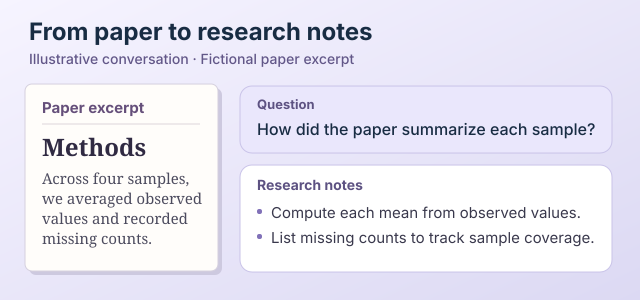

Research chat
Zotero-style research chat
Read papers alongside your analysis. Use an existing MiniMax or other model connection to turn a question into a research note.
Plugin v1.0.0EMP 10.3.0+
Install in EMP ↗ Download plugin.json Source on GitHub ↗Plugin preview

Install and use
Online installation requires EMP 10.4 or later. The install button opens port 8080 on this computer. For another address, open Plugins in that EMP instance.
- In EMP 10.4 or later, open Plugins and select Install and enable on the research chat card.
- Load a model under Models and API, then select Open chat on the plugin card.
- Attach a PDF, abstract or Markdown note. Select Key points, Methodology or Limitations and send your question.
Choose a collapsed, expanded or screen-adaptive panel in Settings. Chat and Agent share the EMP model connection. Saved conversations remain in this browser after disabling the plugin. A running Python AI service and a configured model are required.
Permissions
chat.panel opens the research chat panel provided by EMP.